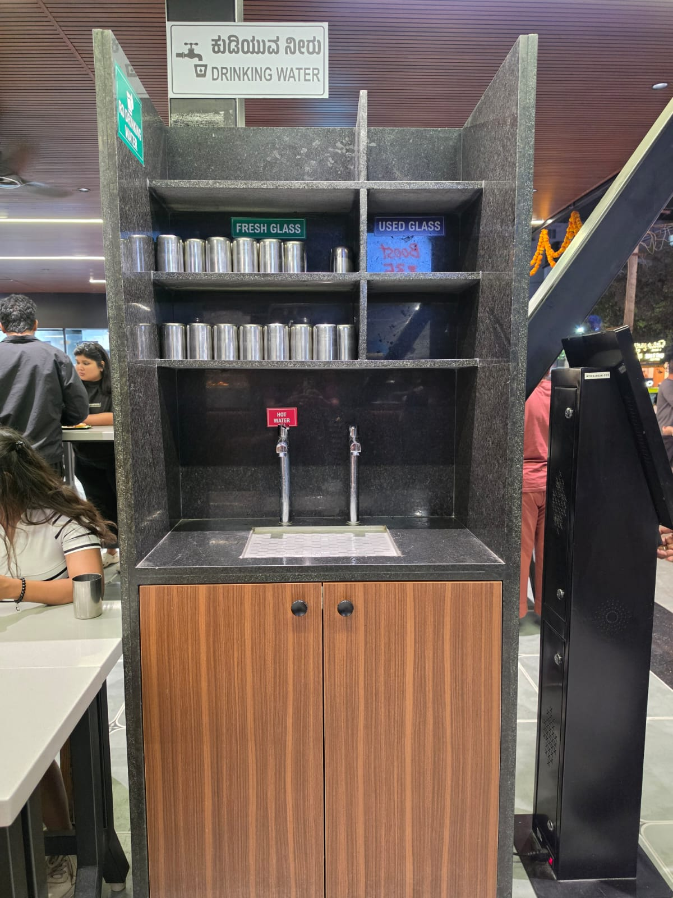
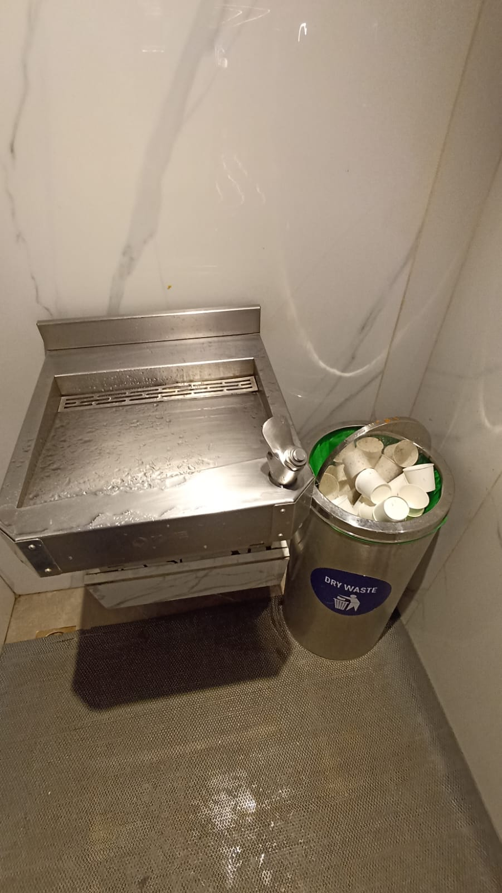

SOMETHING BETTER IS COMING
Pure water.
A flawed vessel.
We keep saying no to water for one silly reason of vessel.
SOMETHING BETTER IS COMING
We keep saying no to water for one silly reason of vessel.
A glass of water shouldn't have to come with a side of doubt.
Every day, walk into any quick service restaurant in India. Order your meal. And then, there it is. A steel glass with a suspicious film, or a flimsy plastic cup headed straight for a landfill.
Every day, millions of people skip drinking water at restaurants just because the glass in front of them does not feel safe. Instead of questioning the system, we choose to just let it be. We go home thirsty, or we buy plastic.
I have almost always skipped drinking water from those glasses. And I'm sure I'm not the only one.


THE REUSED STEEL GLASS
Shared, washed in bulk, and passed on to the next customer. No visibility into how it was cleaned or if it
was. Touched by hundreds.
You can see the stains. You can smell the doubt. Who cleaned this before you?

THE SINGLE USE PLASTIC CUP
Hygienic for one use, harmful for centuries after. Most paper cups are lined with unrecyclable
polyethylene.
Every 8 minutes, a million paper cups enter a landfill. 20 years to decompose. Releasing methane
25× more potent than CO₂.
SYSTEMIC FAILURE
First sanitation crisis identified (1M bacteria found on a single communal cup). Communal cup banned. Hygiene ended the shared experience.
Paper cup scaled globally as the disposable alternative. The landfill crisis begins silently.
50 billion cups discarded. Reusable cups doubted. No structural answer in sight.
THE SCALE AND REALITY
The problem is not invisible; it's just been accepted as normal.
We do not want to accept that.
THE COMMUNITY VERDICT
WHAT COMES NEXT
Clean. Sustainable. Designed for the way India actually drinks.
We're almost ready to show you what that looks like. It's time to close the loop.
No spam. Just the moment it's ready. Let's talk about the problem.